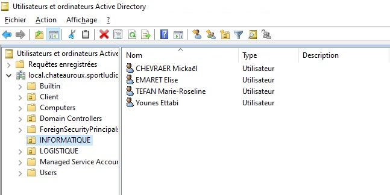
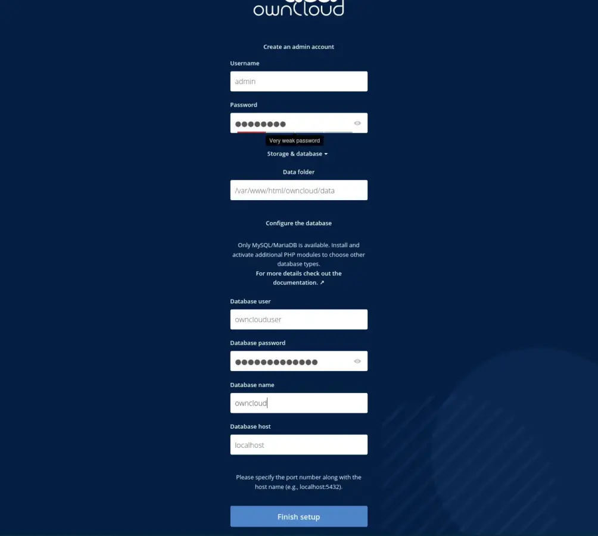
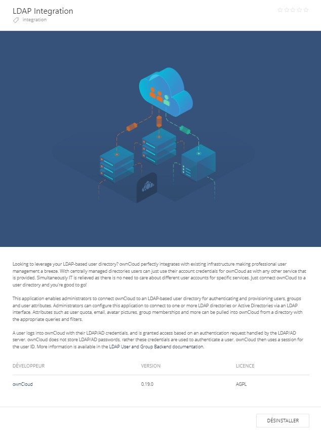
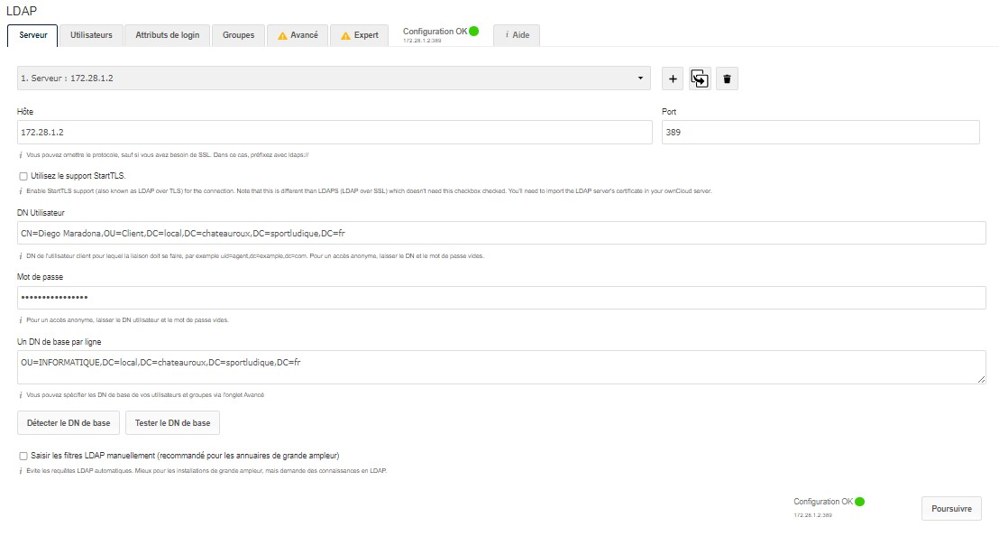
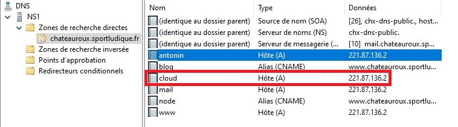
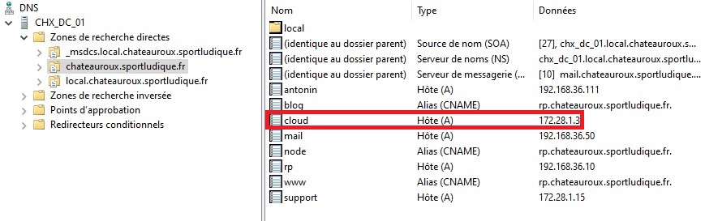
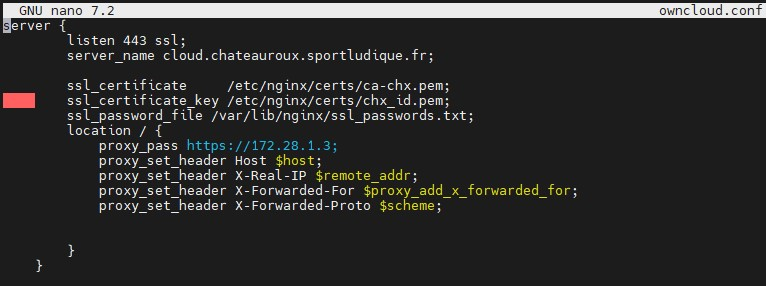
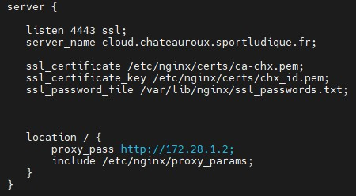
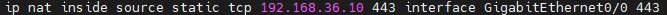

12/ OwnCloud
Mise en place d'Owncloud, plusieurs problèmes relevés : Owncloud pas compatible avec PHP 8 et liaison LDAP. Accessible seulement pour les personnes présente dans une Unité d'Organisation bien défini (Informatique)
Présentation des utilisateurs présent dans l'UO Informatique

Les utilisateurs doivent avant tout déverouillez leur compte et en changeant le mot de passe de ce dernier pour que Owncloud le découvre comme compte actif
Installation des pré-requis pour OwnCloud
sudo apt install apt-transport-https lsb-release ca-certificates wget
sudo apt install apache2 mariadb-server
sudo wget -O /etc/apt/trusted.gpg.d/php.gpg https://packages.sury.org/php/apt.gpg <- Pour PHP 7.4
sudo apt install php7.4-{xml,intl,common,json,curl,mbstring,mysql,gd,imagick,zip,opcache} libapache2-mod-php7.4
sudo mysql_secure_installation
sudo mysql -u root -p
Création de la base de données :
CREATE DATABASE owncloud;
CREATE USER 'ownclouduser'@'localhost' IDENTIFIED BY 'your_password';
GRANT ALL ON owncloud.* TO 'ownclouduser'@'localhost';
FLUSH PRIVILEGES;
EXIT;
wget https://download.owncloud.com/server/stable/owncloud-latest.tar.bz2 <- OwnCloud
sudo chown -R www-data:www-data /var/www/html/owncloud <- Les permissions
sudo nano /etc/apache2/sites-available/owncloud.conf <- Conf Owncloud
Alias /owncloud "/var/www/html/owncloud/"
<Directory /var/www/html/owncloud/>
Options +FollowSymlinks
AllowOverride All
<IfModule mod_dav.c>
Dav off
</IfModule>
SetEnv HOME /var/www/html/owncloud
SetEnv HTTP_HOME /var/www/html/owncloud
</Directory>
sudo a2ensite owncloud <- Activation du site Owncloud
sudo a2enmod rewrite headers env dir mime
sudo systemctl restart apache2
Plus qu'à configurer sur l'interface web
Configuration interface web Owncloud
  
Résolution DNS Privé et Public
 
Reverse Proxy NGINX
 
Règle NAT du serveur
